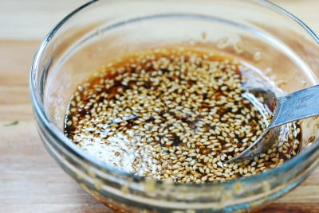

Japchae

Japchae is a beloved Korean dish renowned for its vibrant flavors and unique presentation. Unlike traditional stir-fried noodles, japchae offers a delightful twist with its medley of ingredients delicately placed atop a bed of glass noodles. This savory dish is a harmonious blend of stir-fried vegetables, such as carrots, spinach, and mushrooms, along with tender strips of marinated beef, all complemented by the subtle sweetness of sesame oil and soy sauce. The noodles serve as a canvas, allowing each element to shine individually while harmonizing beautifully when combined. Japchae's rich history and intricate preparation make it a cherished culinary treasure, offering a symphony of tastes and textures in every mouthful. Today we will go through the steps involved in making this sweet and savory dish
Ingredients
- 7 ounces Korean potato starch noodles (dangmyeon, 당면)
- 1 carrot (about 3 ounces)
- 1/2 medium onion
- 2 scallions
- 4 ounces lean tender beef
- 4 ounces fresh shiitake mushroom
- 6 ounces fresh spinach
sauce
- 3.5 tablespoons soy sauce
- 2 tablespoons sugar
- 2 tablespoons sesame oil
- 2 teaspoons minced garlic
- 1 tablespoon roasted sesame seeds
Steps
- Clean all the ingredients. Cut the carrot into matchsticks. Thinly slice the onion. Run the knife through the white parts of the scallions lengthwise, if thick, and then cut into about 2-inch long pieces. Remove the stems from the mushrooms, and slice into 1/4-inch thin strips. Cut the meat into thin 2-inch long strips.

- Combine all the sauce ingredients in a small bowl and mix well until the sugar is dissolved.

- In a large non-stick pan (see note 2), bring about 5 cups of water to a boil, and cook the noodles until completely translucent and soft (6 to 8 minutes). Drain in a strainer and rinse under cold running water. Drain well. Roughly cut the noodles with a pair of kitchen shears or a knife into 6 -7 inch lengths. Transfer to a large mixing bowl. Mix well with 3 tablespoons of the prepared sauce.
- Fill the same pan with 2 cups of water. When water boils, blanch the spinach only until wilted. Drain quickly and shock in cold water. Squeeze out water, run a knife through the squeezed spinach a couple of times, and lightly season with salt.

- Add 1/2 tablespoon of oil to the pan, and stir fry the carrot over medium high heat, sprinkling with a pinch of salt. When the carrot sticks are half way cooked, about a minute, push them to one side of the pan to make room for the onion slices. Stir-fry the onion slices until translucent, sprinkling with a pinch of salt. Stir-in the scallion and cook briefly. Do not overcook. The vegetables should be crisp. Transfer to the bowl with the noodles.

- Add the beef and mushrooms along with 2 tablespoons of the prepared sauce and cook until the meat is cooked through, 2 - 3 minutes. Transfer to the bowl with the noodles.

- Add the spinach and the remaining sauce to the bowl with all other prepared ingredients. Toss well by hand. Adjust the seasoning to taste by adding a little more (start with 1/2 teaspoon) soy sauce and/or sugar as necessary.